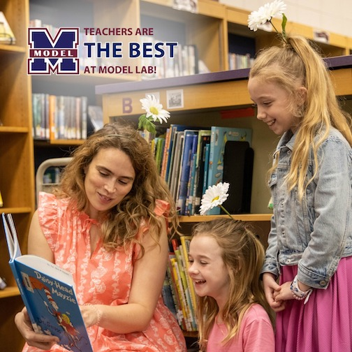
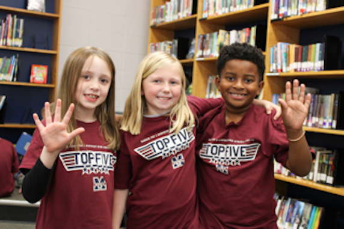
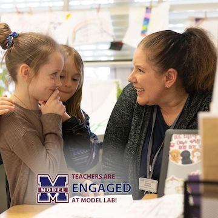
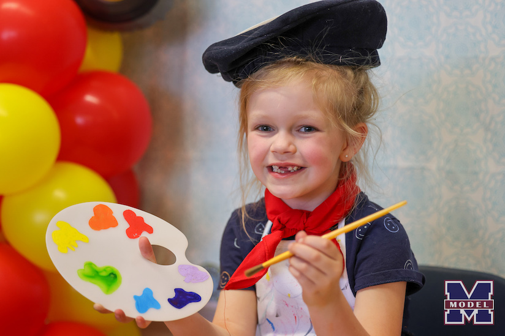
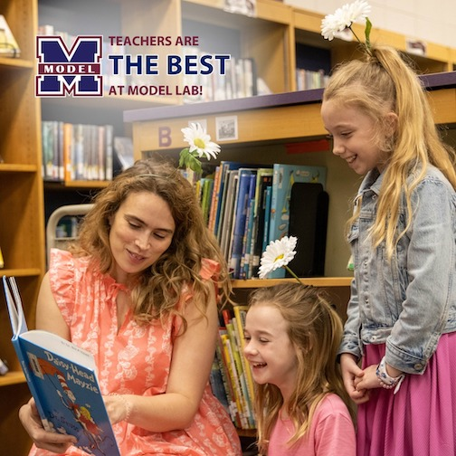
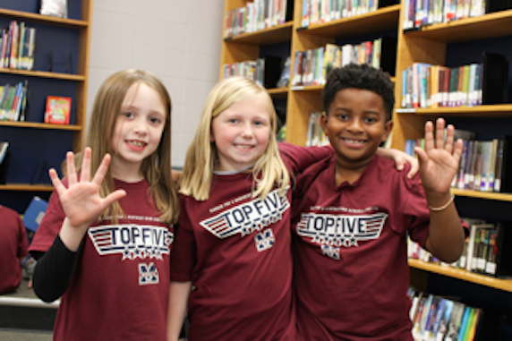
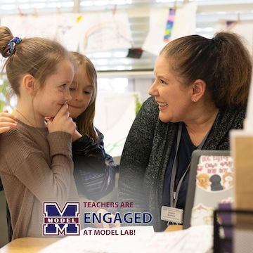
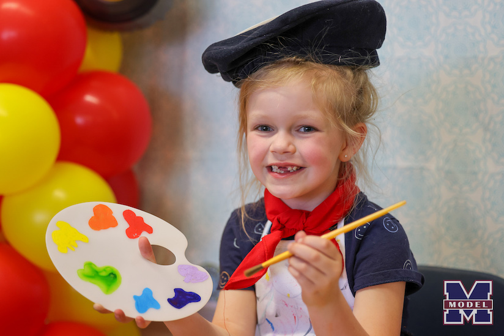

Hi! My name is Jessica Willmes and I am a Kindergarten Teacher at Model Laboratory Elementary School. I am currently working on my masters degree in school librarian studies and my dream is to one day work in a school library. I absolutely love helping our youngest students learn to read and I want to help foster the love of reading with all of my students. In my classroom, you will find a classroom library that my students can borrow from every day. We read to our lovies, each other, as well as our pal reading where we read with an older student. I feel like it is important to bring stories to life for our little ones, so we also perform readers theatre, and I also read a story aloud every day as well. Once I am in a library setting, I will share my love of reading with all of our students, as well as hosting family events on a regular basis. I want our library to be the available to our students before and after school and I will work on including our families more and more. I have included a picture of a few of my students at family events.
 






